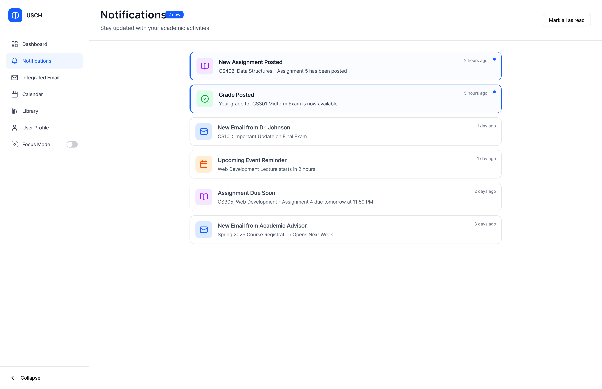
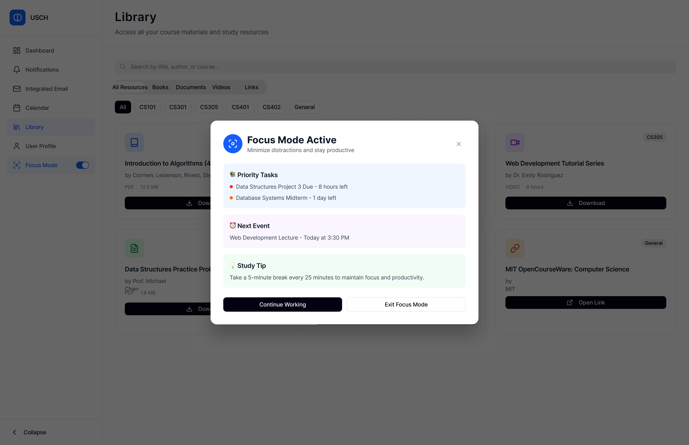
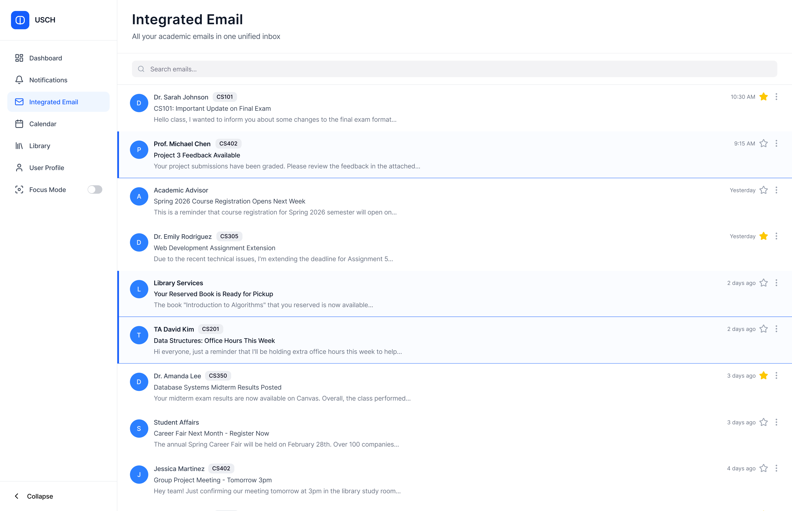
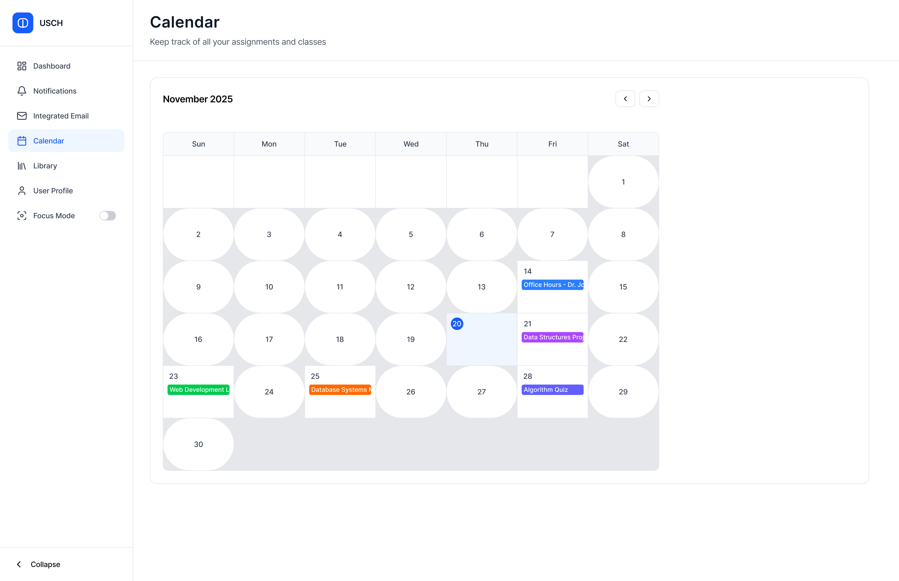
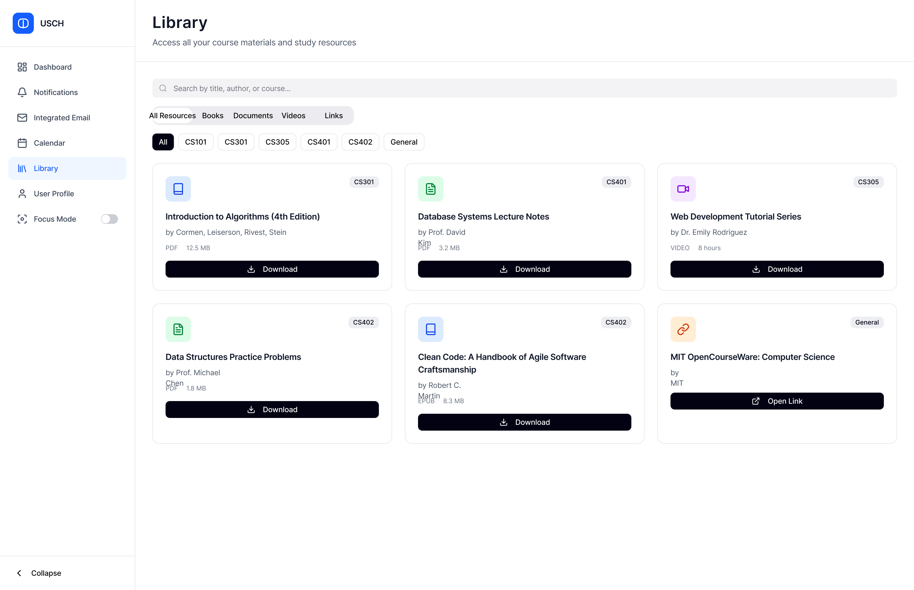

The problem worth solving.
Students are bombarded with messages from multiple platforms - Canvas, Gmail, WhatsApp, Teams - making it difficult to prioritise and manage academic communication effectively. This fragmentation leads to information overload, missed deadlines, and increased stress.
The problem hits hardest for international students navigating a second language and students balancing part-time work with studies. But honestly, it affects almost everyone.
"How might we reduce cognitive load and help students manage academic communication more effectively across multiple fragmented platforms?"

Three pain points, one root cause.
Initial research showed the fragmentation was not just inconvenient - it was causing real anxiety and affecting academic performance.
Platform Fragmentation
Messages scattered across Canvas, Gmail, Teams, and WhatsApp. No single source of truth for anything academic.
Notification Overload
Duplicate notifications and constant interruptions causing stress and cognitive fatigue throughout the day.
Missed Information
Important deadlines buried in noise. Directly affecting academic performance and increasing anxiety.
Eight interviews, four findings.
I ran eight semi-structured interviews with UCC students from diverse backgrounds - international students, working students, and mature students. The goal was to understand communication behaviour at depth, not confirm assumptions.
Communication Fatigue
Students check 4-6 different platforms daily. An average of 45 minutes spent managing notifications before any actual academic work.
Anxiety and FOMO
Fear of missing information leads to compulsive platform-checking and heightened stress, especially around deadlines.
No Prioritisation System
No clear way to distinguish urgent academic messages from general social notifications across any existing platform.
Redundant Messages
Same announcements appearing across multiple platforms causing confusion about which version is authoritative.
Three students, one shared frustration.
Jenny
Anxious about missing important information. Checks platforms compulsively. Language barriers add extra cognitive load to every notification.
Daniel
Values efficiency above everything. Deeply frustrated by constant app-switching. Wants communication that respects his limited time.
Aisling
Organised but easily overwhelmed. Has started muting apps as self-protection but misses important updates as a result.


Research first. Prototype second.
Every design decision was grounded in the research. I moved through four phases and iterated on each before advancing to the next.



The numbers that validated the decisions.
Usability testing with five participants produced consistent results. Zero participants found the interface too complex - which validated the core principle of clarity over features.
What I would do differently.
Run Diary Studies, Not Just Interviews
Interviews captured stated pain but not lived behaviour. Diary studies over a week would have caught the moments of actual overload in real time - which is more valuable design data than retrospective recall.
Test Earlier with Lower Fidelity
I moved to mid-fi before testing the lo-fi properly. Some navigation decisions that were challenged in round 2 usability testing could have been caught earlier and cheaper with paper prototype testing.
Include Academic Staff as a Persona
The system only works if lecturers actually use it to send announcements. I designed entirely from the student side. A staff persona would have revealed important constraints about the sending end of the communication problem.
Define Success Metrics Before Building
I measured overload reduction and ease of use in testing, but I didn't define what "success" looked like before starting design. Having pre-set benchmarks would have made the evaluation cleaner and more defensible.
What the project taught me.
Clarity Beats Features
Users preferred clean and minimal over feature-heavy. Visual hierarchy and clear categorisation reduced cognitive load more effectively than adding more controls or settings ever could.
Research Validates Every Decision
Every significant design choice had a direct line back to an interview insight. The ones that didn't were the ones that got challenged in testing. That correlation was not a coincidence.
Integration Is an Architecture Problem
The biggest UX problems were rooted in data architecture decisions. Building a unified inbox means thinking about how different systems talk to each other from day one, not as an afterthought.
Anxiety Comes From Caring Too Much
The students who struggled most were not the least organised. They were the most committed. That reframing - that overload is a symptom of engagement, not laziness - shaped every design decision I made.